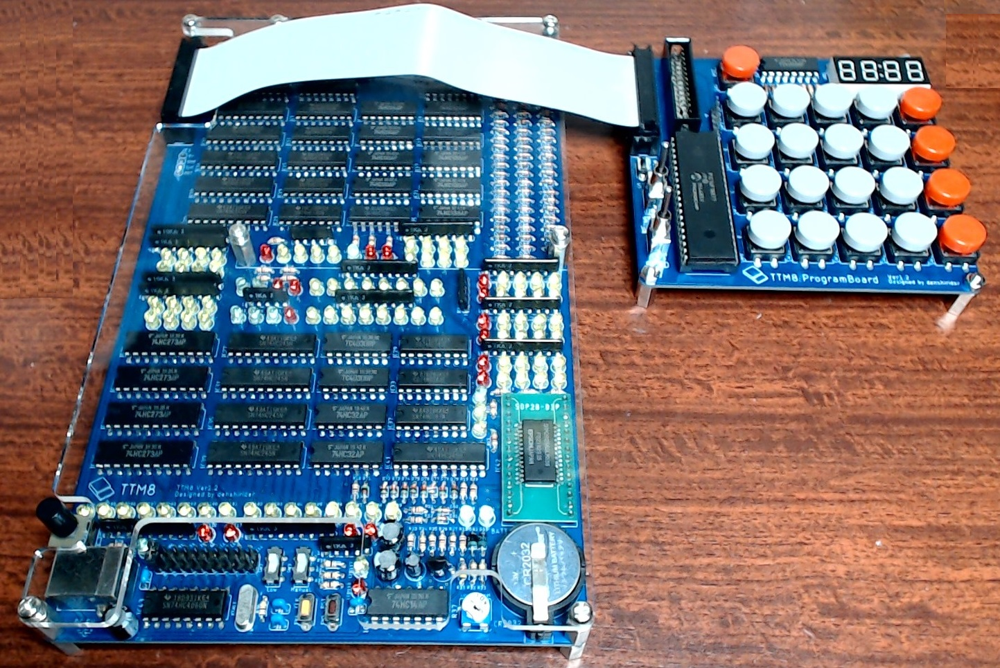

ロジックICで創る CPUキット
TTM8
- TTM8 は計算機の内部構造を学習するための工作キットで、ロジックIC のみの組み合わせで動作する CPU です。8bitCPU であり汎用性のある命令を16 種類実行可能な実用性のあるCPU となっています。プ ログラムは最大64 命令から構成することができます。命令の組み方によって様々な動作をさせることできま す。搭載されたRAM はバックアップ電池にて内容が保存されているため電源を落としても書き込んだプログ ラムは保持されます。メインターゲットはこれからCPU の内部構造を学んでいきたいと考える学生や社会人 です。しかしながらこのCPU はユーザーが自由に拡張IO を増設できるように設計しております。熟練者や より学びを深めたいユーザー様には自ら拡張基板を製作して頂き、制御対象をTTM8 で制御するというよう な使い方も想定しております。
- googleドライブに取扱説明書を掲載しております。
- googleドライブ